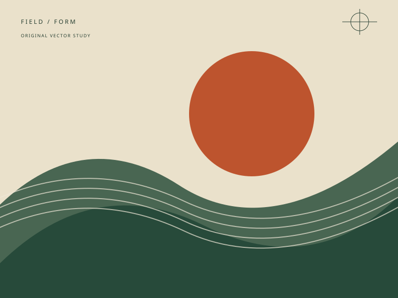

A working notebook
Emphasis.
Continuity. Comparison.
Three small studies in how an effect can support what you see and do.
Static previews. Interactive controls become available with JavaScript.
Give one phrase the emphasis.
Nhìn rõ điều quan trọng.
The words remain readable. A short marker movement can draw attention; a static highlight carries the same emphasis.
Keep the same work in view.
-

01Field notes
A wider frame for the whole composition.
-
02
Cut lines
A warm mount changes the edge of the print.
-
03
Margins
Space around the image changes its weight.
The same three studies keep their names and order in both views. Position transitions help track them; the view change works immediately with motion disabled. All frames reuse one original illustration.
Compare the treatment.
Use the slider, touch or arrow keys. This direct comparison remains available with static previews.